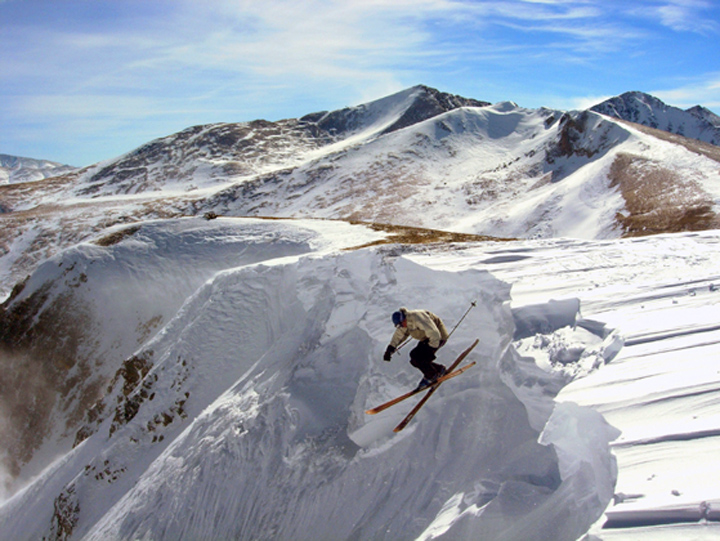

Breckenrige is a realativley small (4928 people) tourist town in Colorado. Breckenrige houses some of the best ski resorts in the US, as well as world class hikeing, rockclimbing and mountain bikeing.
Breckenridge was originaly founded in 1859 as a pikes peak gold rush mineing town after gold was discovered along the blue river. Bun Breckenridge was forever changed in 1960 when the firt ski runs were cut. Ever since 1960 breckenridge has been developing into a town were the main buissness is based around tourism. While under 5000 people call breckenridge home year round there are around three million people that come to visit every year. almost all of the winter visiters are there to ski, in Breckenridge or one of the many surrounding ski resorts. Within an our of breckenridge you could ski at A-basin, copper mountain, loveland or keystone; all world class ski resorts.
